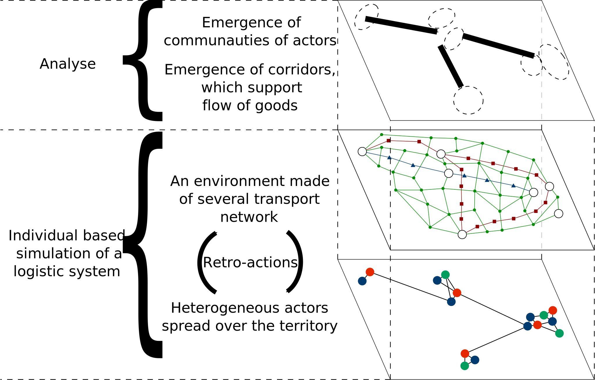
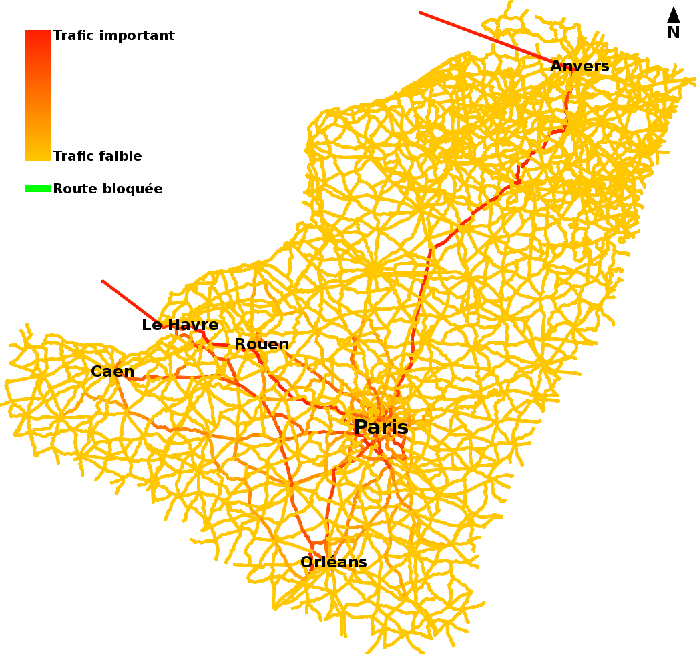
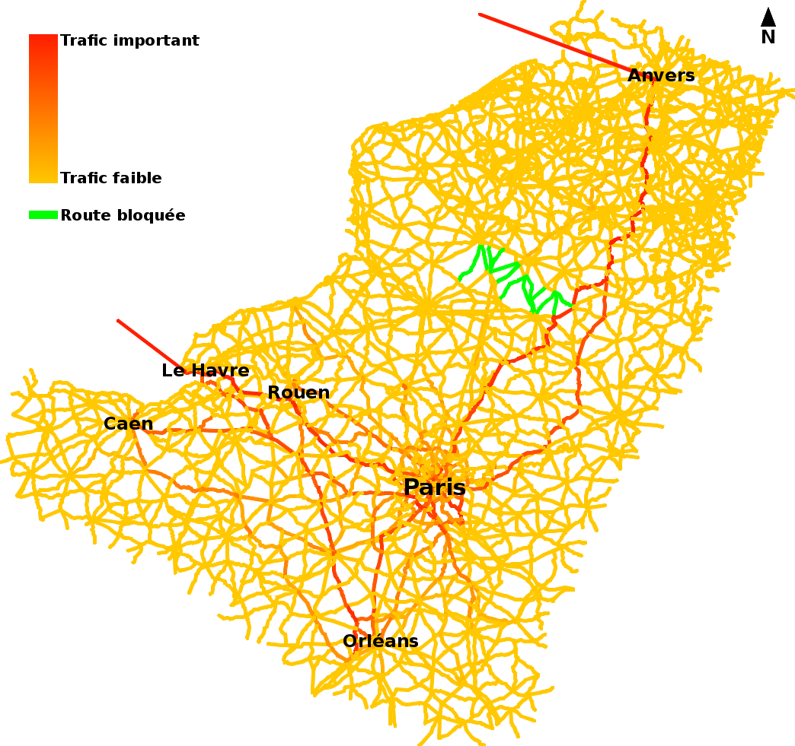
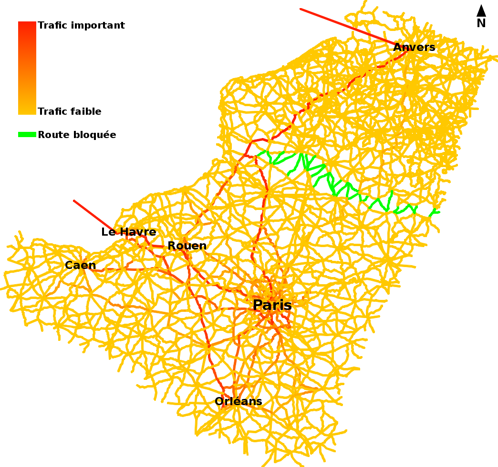

Modèle multi-agent des flux dans les corridors logistiques
IPASPORT
Le Havre
9 Septembre 2016
Modèle multi-agent des flux dans les corridors logistiques
Thibaut Démare
Normandie Université - LITIS
IPASPORT
9 Septembre 2016
Directeur de thèse : Cyrille Bertelle
Encadrants : Antoine Dutot et Laurent Lévêque
Plan
Les systèmes logistiques
Le modèle
Les résultats
Les systèmes logistiques
Des caractéristiques synonymes de complexité
Le territoire se compose de métropoles, et offre de nombreuses structures logistiques de différentes natures.
Ces structures permettent de supporter des flux organisés de marchandises entre les métropoles.
Les marchandises entrent et sortent du territoire par des nœuds d'accès connus.
Le système et ses acteurs subissent différentes contraintes (spatiales, économiques, politique, ou écologique).
Un nombre important d'acteurs aux méthodes et objectifs variés doivent interagir ensemble. Leurs comportements autonomes leur permettent d'organiser globalement les flux de marchandises de manière auto-organisée.
Figure 1: Un flux auto-organisé par de nombreux acteurs.
Problématique
On cherche à comprendre, à de multiples échelles, comment des acteurs, autonomes et très hétérogènes, s'organisent collectivement autour des infrastructures à leurs dispositions pour gérer des flux de marchandises soumis à un ensemble de contraintes.
Pour cela, nous proposons un modèle individus-centrés qui vise à reproduire le fonctionnement d'un système logistique au travers de la simulation.
La simulation permet alors de tester différents scénarios pour comprendre comment des décisions locales impactent l'ensemble du système.
Le modèle
Une approche système complexe de la modélisation
Un modèle multi-agent qui représente chaque acteur et infrastructure par une entité autonome et réactive.
Ces agents ont des règles prédéfinies qui décrivent comment ils se comportent et interagissent entre eux en fonction de leurs perceptions de leurs besoins et de leur environnement.
Des graphes dynamiques représentent le réseau de transport multi-modal.
Il se compose d'un sous-graphe pour chaque type de transport.
On peut suivre le déplacement en temps réel de chaque véhicule et observer l'évolution global du trafic.
L'approche se veut multi échelle : on veut observer comment les propriétés macroscopiques du système émergent des propriétés et comportements locaux.

Figure 2: représentation du modèle
Les résultats
L'implémentation
La simulation, qui concerne l'axe Seine, évolue heure par heure au sein de la plateforme orientée agent GAMA.
Les agents implémentés sont :
Les destinataires finaux : possèdent des stocks qui baissent régulièrement.
Les prestataires logistiques : organisent et gèrent des chaînes logistiques pour leurs clients.
Les entrepôts : ils regroupent les plateformes logistiques ou encore les centres de distribution. Ils offrent notamment des surfaces d'entreposage.
Les fournisseurs : il existe un fournisseur par nœud d'accès au système.
Configuration et analyses
Configurations possibles de la simulation
Modifications des données initiales (le réseau de transport, la localisation des infrastructures ou des acteurs,...).
Modifications locales des niveaux de consommation de la population.
Modifications des stratégies de réapprovisionnement.
Modifications des stratégies de construction des chaînes logistiques.
...
Méthodes d'analyses existantes
La plupart des méthodes d'analyses peuvent s'appliquer globalement ou localement.
Observations du trafic global.
Observations de mesures de performance logistique : délai de livraison, quantité de produits en rupture de stock,...
...
Effets d'une perturbation locale sur le trafic global

Figure 3: État du trafic dans des conditions normales
Effets d'une perturbation locale sur le trafic global

Figure 4: État du trafic dans des conditions peu perturbées
Effets d'une perturbation locale sur le trafic global

Figure 5: État du trafic dans des conditions très perturbées
Conclusion
Pour résumer
Nous avons proposé un modèle multi-agent et des graphes dynamiques pour représenter un système logistique.
C'est une approche multi-échelle : on peut observer les effets globaux de perturbations locales.
L'implémentation a été réalisé au sein de la plateforme de simulation GAMA et utilise des données sur l'axe Seine.